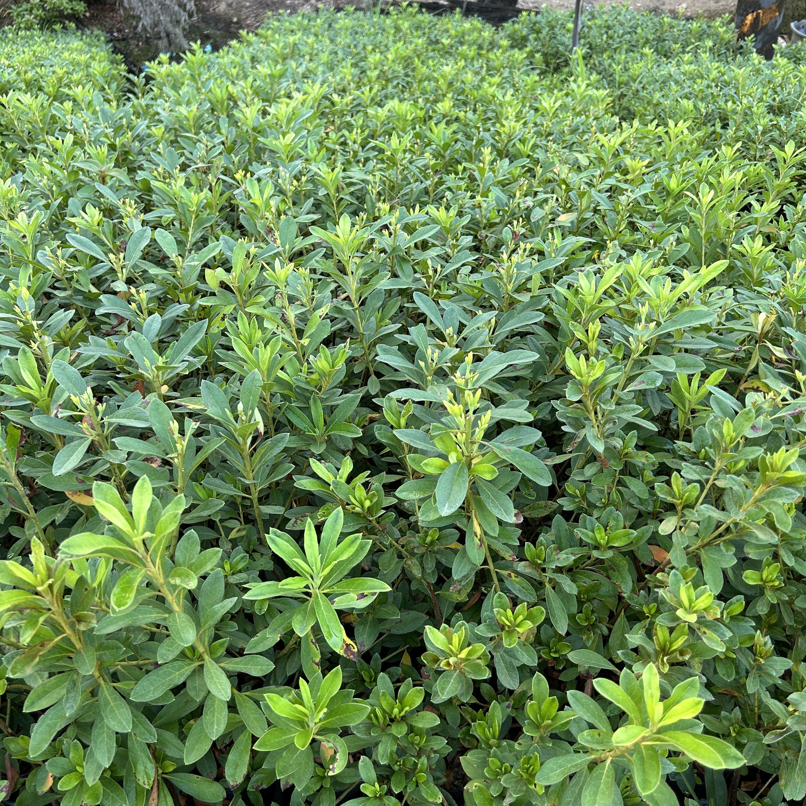

PHOTO / 01NO. 01
平戶杜鵑
平戶杜鵑為常綠灌木，天然株形圓形，嫩枝、嫩葉表面上具有黃褐色毛，花梗上具有白色毛。互生披針形葉片，長5~10㎝、寬約1~2.5㎝。葉色橄欖綠至深綠，葉面有光澤。花3~5朵開於枝端，花朵碩大，於花瓣中央有色斑。開花期2~3月。照料上，適合全日照溫暖環境，日照不足植株稀疏開花不良。適合酸性土壤，避免種植於水泥花台等容易使土壤變鹼性的環境。根系淺細，盆栽者不耐旱，夏季須注意水分補充。開花後修剪，可控制樹形整齊美觀且不影響來年開花。
花期4月中旬至6月底
尺寸10 cm至30 cm